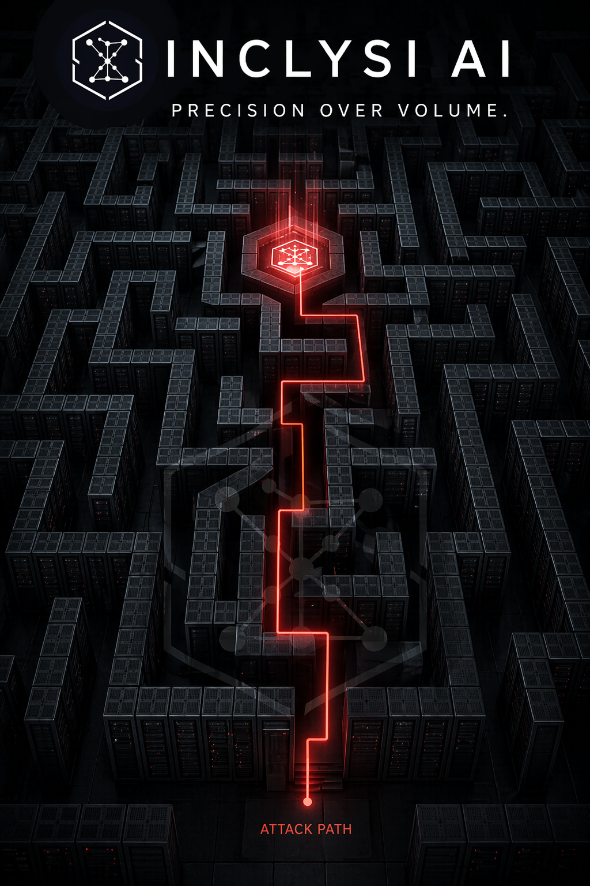

Insights
From the SOC floor.
Technical writing on AI, threat detection and the future of security operations.
Your SIEM generates thousands of alerts. Your analysts shouldn't have to read all of them. Inclysi does.
Modern SIEM environments produce thousands of signals daily. Analysts spend hours triaging noise — missing the threats that actually matter.
The problem isn't data. It's the absence of intelligence to act on it.
Not another dashboard. A system that thinks alongside your team.
Every offense is scored, ranked and explained — before your analyst opens the ticket. Hard evidence, soft signals, entity history: all weighted automatically.
Runs entirely on your infrastructure. Local LLM, local embeddings, local vector search. No data leaves your environment. Ever.
Every analyst verdict trains the system. Entity profiles, behavioral baselines and past incidents accumulate into an organizational knowledge base that compounds over time.
Deep integration with your existing SIEM environment. No rip-and-replace. Inclysi amplifies what you already have — it doesn't replace it.
A multi-stage AI pipeline that turns SIEM noise into prioritized, evidence-backed decisions.
Offenses are pulled from your SIEM with full context — events, flows, entity history, network topology.
Hybrid vector + keyword search surfaces similar past incidents. Pattern recognition at scale.
Two-stage local LLM pipeline: initial triage, then deep analysis. Confidence scoring with evidence chain.
Clear verdict with supporting evidence. Every decision feeds back into the system, making it smarter.

Technical writing on AI, threat detection and the future of security operations.
Inclysi is built for security teams who take precision seriously.
Get in Touch